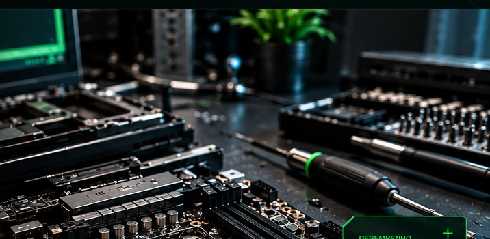

MANUTENÇÃO
SEM ENROLAÇÃO.
Computador lento, travando, desligando ou apresentando falhas? A Lumem trabalha com manutenção preventiva e corretiva para desktops e notebooks, com foco no que realmente precisa ser feito.
RECUPERAR
ANTES DE SUBSTITUIR.
Desempenho ruim, travamentos, aquecimento ou falhas podem ter solução. A Lumem identifica a causa, avalia o estado do equipamento e indica o reparo ou upgrade que realmente faz sentido.
SOLICITAR DIAGNÓSTICO
REPARO
COM CRITÉRIO.
Limpeza, análise de componentes, troca de peças, correção de falhas e upgrades. O objetivo é recuperar desempenho e prolongar a vida útil do equipamento com uma solução adequada ao problema.
SOLUÇÕES COMPLETAS
EM TECNOLOGIA.
Do reparo de hardware à segurança dos dados: soluções práticas para manter sua tecnologia estável, rápida e protegida.
MANUTENÇÃO DE DESKTOPS E NOTEBOOKS
Diagnóstico, limpeza, reparo de hardware e soluções de desempenho.
UPGRADE DE SSD E RAM
Mais velocidade e vida útil para o seu equipamento.
MANUTENÇÃO DE SISTEMAS
Instalação, configuração e otimização de sistemas operacionais e softwares.
SEGURANÇA DA INFORMAÇÃO
Proteção de dados, boas práticas e orientação para um uso mais seguro da tecnologia.
MAIS DE 10 ANOS
DE EXPERIÊNCIA EM TI.
Atuação prática em manutenção de computadores, notebooks, sistemas, redes e suporte. A formação em Tecnologia em Segurança da Informação une experiência de campo e conhecimento técnico para entregar soluções completas.
SEGURANÇA DA INFORMAÇÃO
DE EXPERIÊNCIA
PESSOAS E EMPRESAS
MANUTENÇÃO
CONTÍNUA.
Para empresas que preferem ter suporte técnico recorrente, a Lumem trabalha com contratos mensais, semestrais ou anuais, conforme a necessidade.
EXPERIÊNCIA EM
TECNOLOGIA E SEGURANÇA.
A LUMEM foi fundada por Taysson Rodolfo, técnico de informática com mais de 10 anos de atuação em tecnologia da informação, manutenção de computadores e notebooks, redes e sistemas.
Além da experiência prática em reparo e suporte, possui formação em Análise e Desenvolvimento de Sistemas e em Tecnologia em Segurança da Informação, unindo manutenção, sistemas e proteção de dados.
SEU COMPUTADOR
PRECISA DE CUIDADO?
Fale com a Lumem. Conte o problema do seu computador ou notebook e receba orientação para diagnóstico, manutenção ou upgrade.